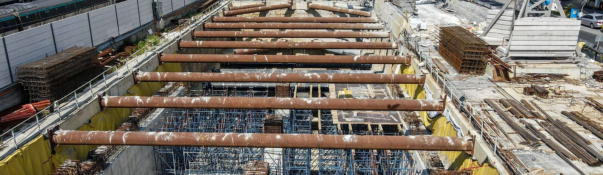
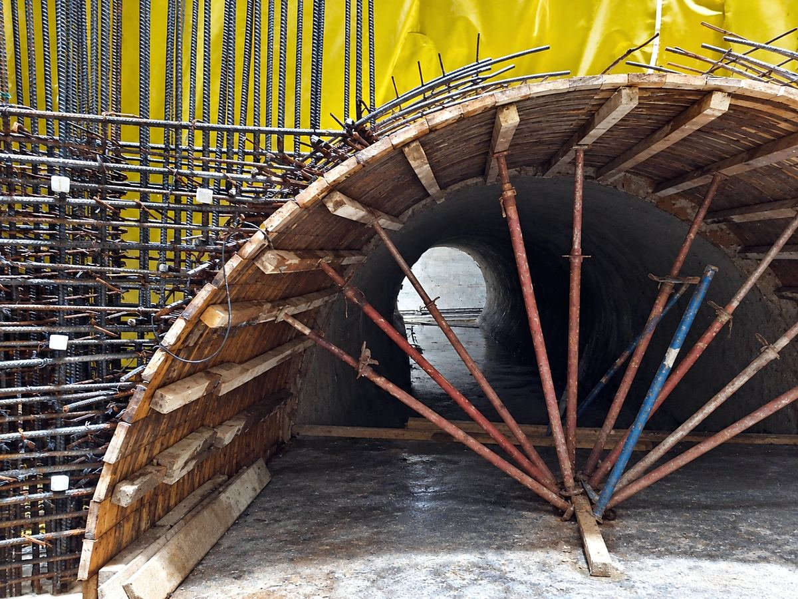
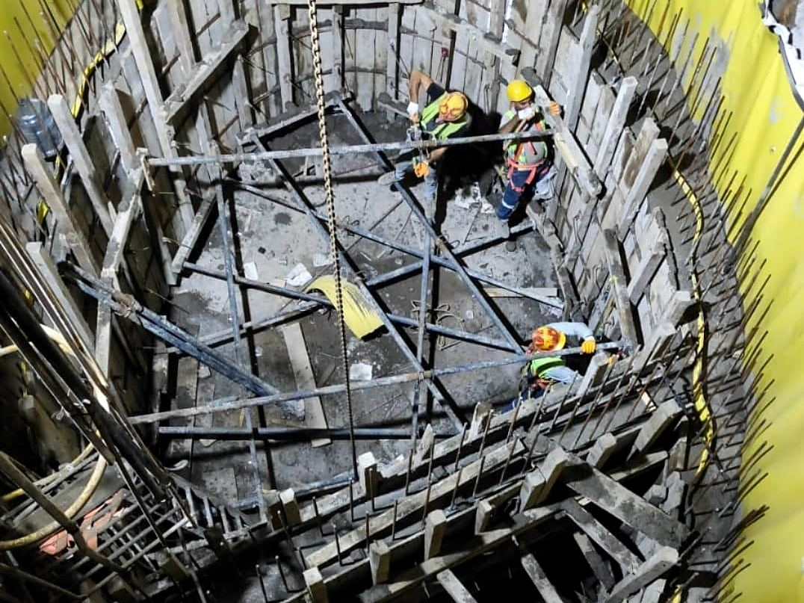
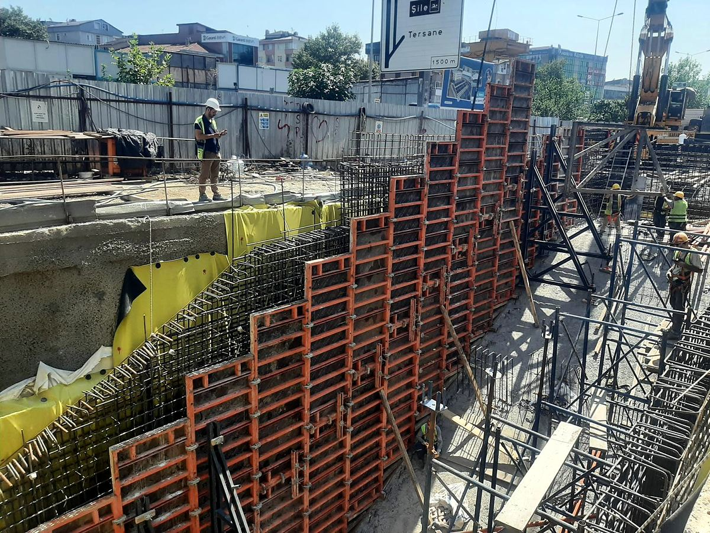
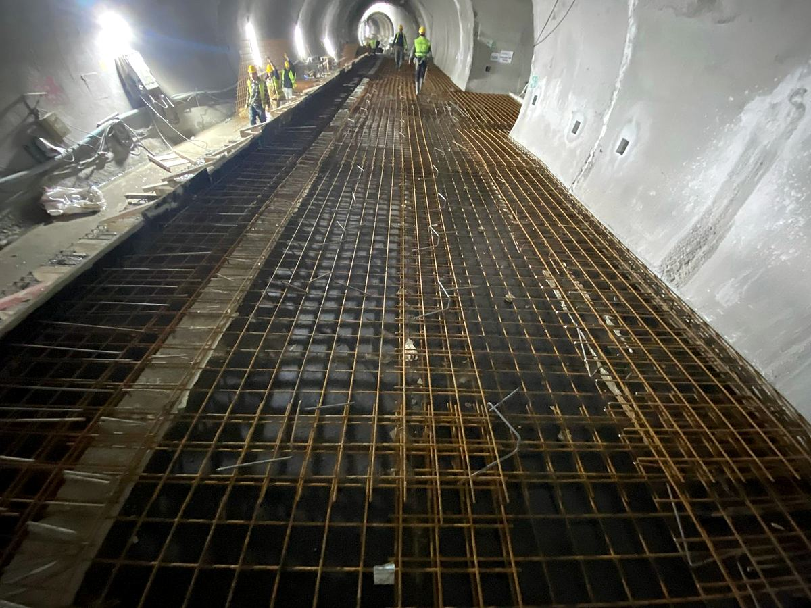
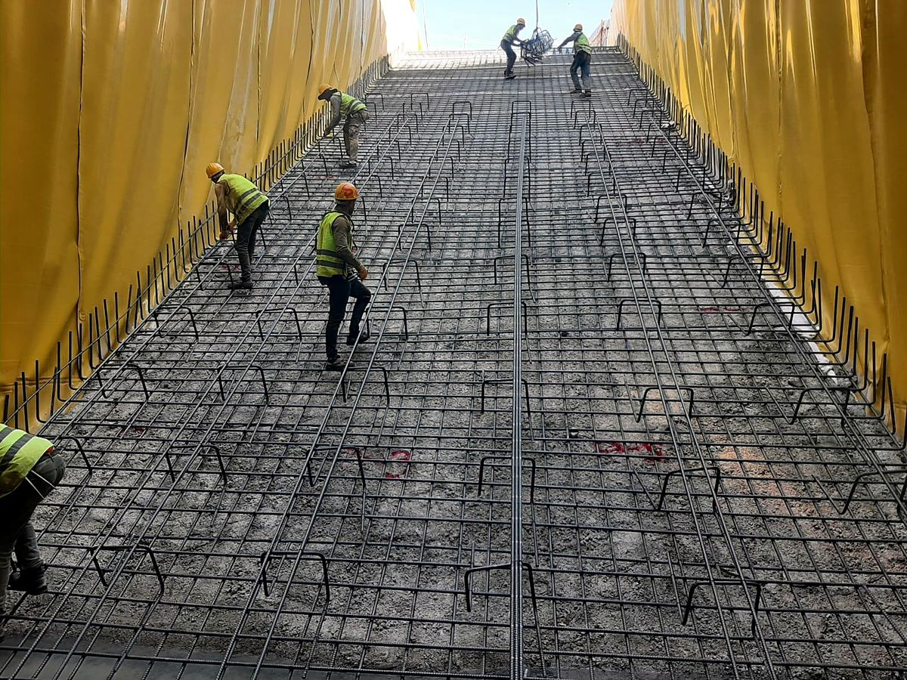
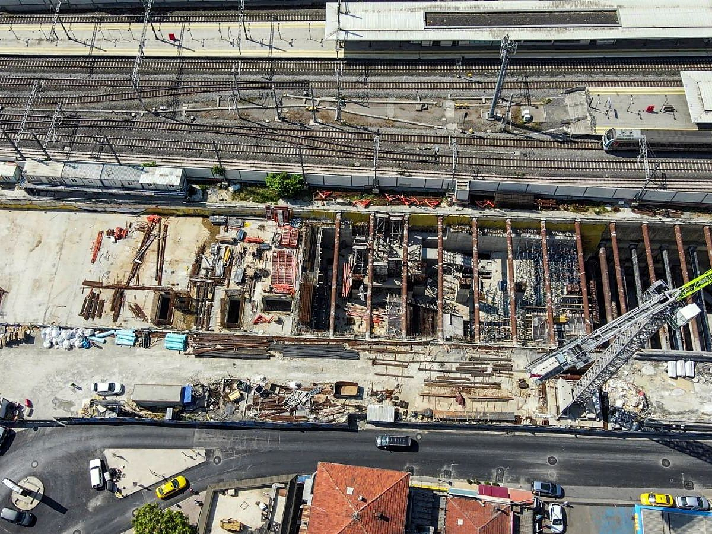
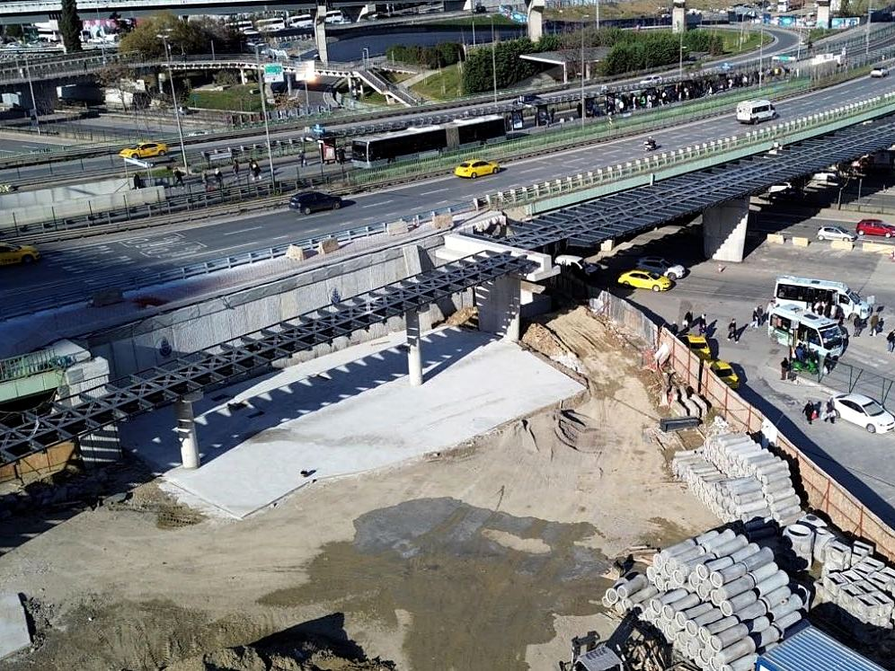

Altyapı
AltyapıGöztepe–Ümraniye–Ataşehir Metrosu
Gülermak – Nurol – Makyol
2023–2026
Kaynarca ve Pendik istasyonlarında şaftlar, aç-kapa istasyon yapısı, giriş-çıkış yapıları ve platform katlarında betonarme işleri.

İstasyon kalemleri betonarme işleridir. Mavi nokta, devam eden işleri gösterir.






AltyapıGülermak – Nurol – Makyol
2023–2026
 Altyapı
AltyapıRönesans Holding
2025–2026

Makyol – Metgün – Kalyon
2024